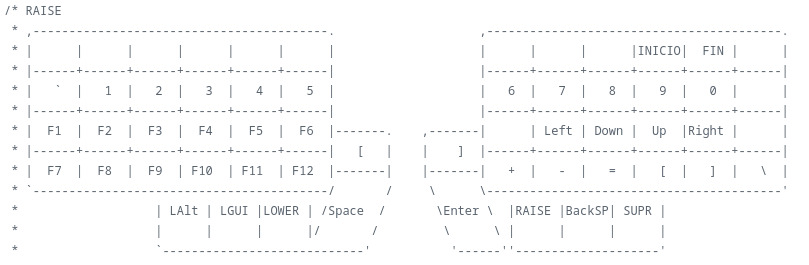
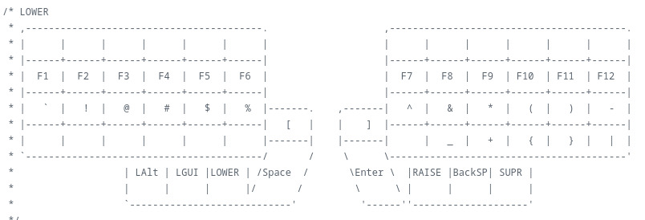
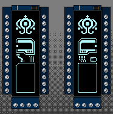
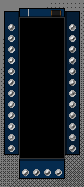
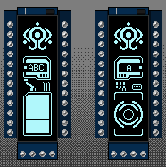

Teclado dividido de 64 teclas, incluidos los macros nvim
Este proyecto surgió de la necesidad de poder crear algo para poder tener una mayor eficiencia en el tecleo y así mismo poder sacar mis proyectos más rápído, sin embargo durante este proceso surgieron varios problemas que poco a poco fuí solucionando
De los primeros problemas que surgieron fué la distribución inicial, al ser un teclado con menos teclas, claramente no tendría a mi disposición todas las teclas de un teclado estándar, así como un teclado 100%, por ende sin estas ya no estaba la parte numérica, las teclas de función, e incluso las flechas, lo cual no era mucho cambio debido a que venía ya de usar un teclado 60%, sin embargo, este al ser más parecido a un 40%, representó un reto de distribución, el cual se divide en 3 capas: QWERTY, Lower y Raise. O bien: arriba, enmedio y abajo

Para poder realizar este teclado primero elegí la distribución de teclas de Lily58 original pero como no me acomodaban al 100%, las fuí modificando poco a poco hasta lograr la que se adaptaba a mí, al notar lo seguido que usaba las teclas Fin, Inicio, suprimir y Altgr, opté por colocarlas en la parte superior derecha del lado derecho de este
En otro lado del teclado, en la parte izquierda coloqué comandos propios para mi editor de texto, nvim como se muestra en las siguientes imágenes, esto me permite tener un acceso más rápido a los comandos que más uso y así mismo poder tener una mayor eficiencia al momento de escribir código, ya que no tengo que estar moviendo mis manos a otras partes del teclado para poder ejecutar estos comandos, sino que los tengo a la mano y puedo ejecutarlos con mayor rapidez

En cuanto a la parte de la programación del teclado, este se realizó en QMK , el cual es un firmware open source para teclados mecánicos, el cual permite una gran personalización y flexibilidad, permitiendo crear macros, capas y demás funciones que permiten una mayor eficiencia al momento de escribir código
La animación original que venía con el firmware de QMK no me agradaba mucho, por lo que opté por usar una animación de Lain, la cual se muestra en la siguiente imagen, esta animación es un gif que se encuentra en la carpeta del proyecto y que se puede modificar a gusto del usuario, sin embargo, para poder mostrar esta animación en el teclado, se tuvo que modificar el código del firmware de QMK, ya que este no soporta gifs, por lo que se tuvo que convertir el gif a un formato compatible con el firmware de QMK, el cual es un formato de imagen llamado .c, el cual es un formato de imagen que permite mostrar imágenes en el teclado, sin embargo, este formato no soporta animaciones, por lo que se tuvo que crear un script en Python que convierte el gif a una serie de imágenes en formato .c, las cuales se muestran en el teclado como una animación.



También cambié el "Hello navi" por un "Hello Rasgon", de su formato horizontal original a uno vertical, más asociado a una escritura china o japonesa
Se escucha muy complejo pero realmente no lo es y menos si es algo que te interesa, la desición de usar esta animación fué debido a la armonía visual dada y que era más interactiva que solo el logo de Lily58, así mismo da una sensación mayor de inmersión con lo que se está haciendo, lo que debes tener cuidado siempre es con respecto a las orientaciones de la animación.
Los materiales que se usaron para este proyecto fueron los siguientes: